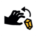

Quartzdice
Board Game Arena 官方规则文档
This is a set collection game. Collect high value crystals while avoiding theft and unstable/Autunite crystals. The game is played across six rounds.
Round Structure
The game is played in rounds. In each round:
- - every player takes one turn.
- - the player with the most Valuable crystals (not black) in their Cart at the end of the round becomes first player.
- - 2 unstable/Autunite crystals are added to the bag
Turn Structure
Players complete the following 3 steps in order:
- 1. Mine a crystal
- 2. Roll the dice
- 3. Perform actions
Mine a crystal
- - The player draws a crystal from the bag and places it in their cart.
- - If the mined crystal is an unstable/Autunite crystal, the player receives a reroll marker.
- - There is no limit to the number of reroll markers a player can have.
Roll the dice
- - Each player has up to three dice rolls per turn.
- - In the first, all 5 dice must be rolled.
- - In the second and third they can reroll as many dice as they want.
- - If they have a reroll marker, the player can discard it to perform an extra reroll.
Perform actions
- - According to the result of the dice, the player will be able to perform one or more actions.
- - Many actions require a minimum of 2 dice to perform the action.
- - Many actions are improved by additional dice.
| Pickaxe | Minimum 1 | Mine 1 crystal per Pickaxe die. | |
| Jackhammer | Minimum 2 | Mine 1 crystal per Jackhammer die and return half to the bag (rounded down). | |
| Chest | Minimum 2 | Move 1 crystal to the chest for 2 Chest dice, 2 crystals for 3 chest dice, etc. | |
| Transfer | Minimum 2 | Move 1 crystal to another player's cart for 2 Transfer dice, 2 crystals for 3 Transfer dice, etc. May be given to different opponents. | |
 |
Steal | Minimum 2 | Move 1 crystal from another player's cart to your own for 2 Steal dice, 2 crystals for 3 Steal dice, etc. May not be stolen from chests. May be stolen from different opponents. |
| Helmet | Multiples of 2 | 2 Helmet dice substitute for any other 1 die face. |
Scoring
Points are awarded for each crystal according to colour/type:
- - crystals can be in the chest or cart
- - unstable/Autunite awards a penalty
| Quartz | 2 points each | |
| Rubellite | 3 points each | |
| Emerald | 4 points each | |
| Sapphire | 5 points each | |
| Ruby | 7 points each | |
| Amber | 9 points each | |
| unstable/Autunite | -3 points each |
Bonus points are awarded for collections of crystals of the same colour:
- - crystals can be in the chest or cart
- - does not include unstable/Autunite
| 3 identical Crystals | 3 points | |
| 4 identical Crystals | 6 points | |
| 5 identical Crystals | 10 points |
Reckless Penalty is awarded to the player with the fewest crystals in their chest
- - -5 points
- - In case of a tie, all tied players lose 5 points.
The player with the most points after 6 rounds wins.